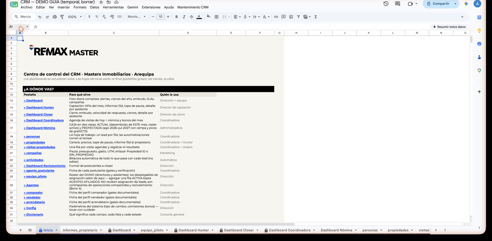

Mapa de pestañas del CRM
El CRM tiene muchas pestañas, pero solo unas pocas se llenan a mano. Este mapa te dice, pestaña por pestaña, qué es cada una, quién la usa y si puedes tocarla o no.
El semáforo: cómo leer este mapa
Cada pestaña del CRM tiene un color, como un semáforo:
- 🟢 SE LLENA — aquí sí escribes a mano. Al llenar, el CRM dispara sus automatizaciones (IDs, fechas, estados, comisiones).
- — se calculan solas. Las abres para leer, nunca para escribir.
- 🔴 NO TOCAR — son el motor del sistema. Si se editan, la automatización se rompe.
Así se ve en el CRM: al abrir el Google Sheet, la primera pestaña es Inicio — la portada. Su tabla "¿A dónde vas?" te lleva directo a la pestaña que necesitas. Empieza siempre por ahí.

🟢 Las que SE LLENAN (a mano)
Estas son las únicas pestañas donde escribes. Cada dato que tecleas dispara algo automático unos ~10 segundos después (eso es normal: es Google, no el CRM).
| Pestaña | Para qué sirve | Quién la usa | Semáforo |
|---|---|---|---|
personas |
LA hoja de trabajo: un lead por fila. Solo se llenan las columnas blancas de entrada; las grises son automáticas. | Coordinadora | 🟢 SE LLENA |
visitas propiedades |
Registro de visitas: una fila por cada visita — a propiedades de la cartera del piloto o ajenas (de un agente Master u otra oficina REMAX; se indica en "Origen de la propiedad" y se anota la referencia). Así se miden TODAS las visitas del comprador. | Coordinadora | 🟢 SE LLENA |
campañas |
Presupuesto, gasto y UTM de cada campaña de publicidad. | Coordinadora / Dirección | 🟢 SE LLENA |
agente_postulante |
Ficha de cada persona que postula para ser agente de la oficina. | Coordinadora | 🟢 SE LLENA |
informes_propietario |
Informes al dueño de cada propiedad: se llenan solo las columnas A–G; el resto se calcula solo. | Equipo Hunter / Coordinadora | 🟢 SE LLENA |
propiedades |
La cartera de inmuebles. Casi todo lo llena el sistema; a mano solo precio, moneda y el Valor ACM (el valor comercial según el análisis de mercado — el tope de pauta se calcula sobre él, y la columna "Sobreprecio %" muestra cuán por encima del mercado está el precio listado). | Coordinadora / Hunter (precio, moneda, Valor ACM) | 🟢 SE LLENA |
Agentes |
Roster de agentes afiliados de la oficina (categoría PLATA/ORO). | Solo Dirección | 🟢 SE LLENA |
equipo_piloto |
Roster del equipo del piloto DOMO (Hunter y Closer). | Solo Dirección | 🟢 SE LLENA |
Ojo con propiedades: es verde solo a medias. Las filas las crea el CRM solo (cuando un lead propietario pasa a CAPTADO). Tú solo completas precio y moneda si quedaron vacíos. Nada más.
🟡 Las que SOLO SE MIRAN (se calculan solas)
Estas pestañas son reportes vivos: se arman solas con lo que llenaste en las verdes. Se abren para leer y tomar decisiones. Si escribes en ellas, dañas las fórmulas.
| Pestaña | Para qué sirve | Quién la usa | Semáforo |
|---|---|---|---|
Inicio |
La portada del CRM: la tabla "¿A dónde vas?" te lleva a cada pestaña. | Todos | |
Dashboard |
La foto diaria de la operación: alertas, embudo, SLAs y campañas. | Coordinadora / Dirección | |
Dashboard Hunter |
El lado de captación: KPIs, informes de 15 días y tope de pauta. | Equipo Hunter / Dirección | |
Dashboard Closer |
El lado de cierre: embudo, velocidad y cierres. | Equipo Closer / Dirección | |
Dashboard Coordinadora |
La agenda de visitas de hoy, más su nómina y bonos. | Coordinadora | |
Dashboard Nómina |
La caja del equipo en dos vistas. | Dirección | |
Dashboard Reclutamiento |
El funnel de postulantes a agente: cuántos entran, avanzan y se afilian. | Dirección / Coordinadora | |
actividades |
La bitácora automática de todo lo que pasa con cada lead. NO se edita, solo se lee. | Todos (solo lectura) |
🔴 Las que NO SE TOCAN (motor del sistema)
Estas pestañas hacen funcionar todo lo demás. No se abren para trabajar; algunas ni hace falta abrirlas nunca.
| Pestaña | Para qué sirve | Quién la usa | Semáforo |
|---|---|---|---|
Config |
Los parámetros del sistema (tipo de cambio, plazos de SLA). Solo Dirección los cambia. | Solo Dirección | 🔴 NO TOCAR |
Diccionario |
La referencia de qué significa cada campo y cada estado. | Consulta (solo lectura) | 🔴 NO TOCAR |
_Listas |
Alimenta todos los desplegables del CRM (perfiles, estados, agentes). | El sistema | 🔴 NO TOCAR |
_SLA_fallos |
El registro automático de los SLAs (compromisos de tiempo) que no se cumplieron. | El sistema | 🔴 NO TOCAR |
_snapshot_precorte |
Una foto congelada de los datos antes de un corte. Es respaldo histórico. | El sistema | 🔴 NO TOCAR |
comprador, vendedor, arrendador, arrendatario, anticresista_acreedor, anticresista_deudor, constructora |
Las hojas de perfil: el detalle de cada lead según su tipo. El sistema las llena solo. | El sistema (excepto gates) | 🔴 NO TOCAR |
La única excepción en las hojas de perfil: las casillas de gates (los checkboxes de requisitos, como "DNI recibido"). Esas sí se marcan a mano — y al marcarlas todas, "Gates completos" se recalcula solo en personas. Todo lo demás de esas hojas, ni tocarlo.
¿Por qué hay hojas que no se tocan?
Porque el motor del CRM vive ahí. Las hojas rojas guardan las listas de los desplegables, los parámetros de cálculo y los registros automáticos. Cuando escribes un nombre en personas y el Lead ID aparece solo, eso funciona porque esas hojas están intactas.
Si alguien edita _Listas, los desplegables muestran opciones equivocadas o se quedan vacíos. Si alguien cambia Config, las comisiones y los SLAs se calculan mal. Si alguien escribe en una hoja de perfil, el vínculo con personas se rompe. No es una regla de capricho: es que tocar una hoja roja rompe la automatización para todos.
Regla de oro: ante la duda, NO borres y NO escribas. Si algo se ve mal en una hoja amarilla o roja, avisa a Dirección — hay respaldos y el arreglo es sencillo si nadie tocó nada. Y nunca, nunca, borres ni edites la fila 2 de personas ni de propiedades: ahí viven las fórmulas de todo el sistema.